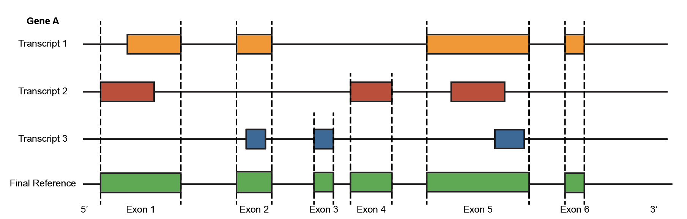

Exon GTF Generation
This guide explains how to generate an exon-level GTF reference file. This file is used to align scRNA-seq data to the exon level, allowing the extraction of exon read counts and junction read counts. The goal of the exon-level GTF is to ensure that exons within each gene are unique and do not overlap with one another.

For Human GRCh38
You can directly download the pre-generated exon-level GTF file from here.
For Other Species
First, download the reference GTF file from here.
Then, run this script to generate the exon-level GTF file.
[1]:
from DOLPHIN.preprocess import generate_nonoverlapping_exons
import os
[3]:
# === Step 1: Set paths ===
# Define the output directory
output_path = "./"
# Path to the input Ensembl GTF file
input_gtf_path = "/mnt/md0/kailu/Apps/ensembl_hg38/Homo_sapiens.GRCh38.107.gtf"
[4]:
gtf_df, overlaps = generate_nonoverlapping_exons(input_gtf_path, output_path)
[Step] Reading GTF file from: /mnt/md0/kailu/Apps/ensembl_hg38/Homo_sapiens.GRCh38.107.gtf
[Status] GTF loaded and parsed with 3371244 total entries.
[Status] Removed duplicates: 674296 unique exon entries remain.
[Step] Start processing and saving exons by batch...
Processing all genes: 100%|██████████| 61860/61860 [1:16:37<00:00, 13.46it/s]
[Done] Finished saving all exon batches.
Successfully combined 7 files into a single DataFrame with 354386 rows.
Found 0 overlapping exon entries.
All 61860 expected genes are present in the merged DataFrame.
/mnt/md1/kailu/DOLPHIN/DOLPHIN/preprocess/gtfpy.py:108: SettingWithCopyWarning:
A value is trying to be set on a copy of a slice from a DataFrame.
Try using .loc[row_indexer,col_indexer] = value instead
See the caveats in the documentation: https://pandas.pydata.org/pandas-docs/stable/user_guide/indexing.html#returning-a-view-versus-a-copy
df['attribute']=""
/mnt/md1/kailu/DOLPHIN/DOLPHIN/preprocess/gtfpy.py:113: SettingWithCopyWarning:
A value is trying to be set on a copy of a slice from a DataFrame.
Try using .loc[row_indexer,col_indexer] = value instead
See the caveats in the documentation: https://pandas.pydata.org/pandas-docs/stable/user_guide/indexing.html#returning-a-view-versus-a-copy
df['attribute']=df['attribute']+c+' "'+inGTF[c].astype(str)+'"; '
/mnt/md1/kailu/DOLPHIN/DOLPHIN/preprocess/gtfpy.py:113: SettingWithCopyWarning:
A value is trying to be set on a copy of a slice from a DataFrame.
Try using .loc[row_indexer,col_indexer] = value instead
See the caveats in the documentation: https://pandas.pydata.org/pandas-docs/stable/user_guide/indexing.html#returning-a-view-versus-a-copy
df['attribute']=df['attribute']+c+' "'+inGTF[c].astype(str)+'"; '
/mnt/md1/kailu/DOLPHIN/DOLPHIN/preprocess/gtfpy.py:113: SettingWithCopyWarning:
A value is trying to be set on a copy of a slice from a DataFrame.
Try using .loc[row_indexer,col_indexer] = value instead
See the caveats in the documentation: https://pandas.pydata.org/pandas-docs/stable/user_guide/indexing.html#returning-a-view-versus-a-copy
df['attribute']=df['attribute']+c+' "'+inGTF[c].astype(str)+'"; '
/mnt/md1/kailu/DOLPHIN/DOLPHIN/preprocess/gtfpy.py:113: SettingWithCopyWarning:
A value is trying to be set on a copy of a slice from a DataFrame.
Try using .loc[row_indexer,col_indexer] = value instead
See the caveats in the documentation: https://pandas.pydata.org/pandas-docs/stable/user_guide/indexing.html#returning-a-view-versus-a-copy
df['attribute']=df['attribute']+c+' "'+inGTF[c].astype(str)+'"; '
/mnt/md1/kailu/DOLPHIN/DOLPHIN/preprocess/gtfpy.py:113: SettingWithCopyWarning:
A value is trying to be set on a copy of a slice from a DataFrame.
Try using .loc[row_indexer,col_indexer] = value instead
See the caveats in the documentation: https://pandas.pydata.org/pandas-docs/stable/user_guide/indexing.html#returning-a-view-versus-a-copy
df['attribute']=df['attribute']+c+' "'+inGTF[c].astype(str)+'"; '
/mnt/md1/kailu/DOLPHIN/DOLPHIN/preprocess/gtfpy.py:111: SettingWithCopyWarning:
A value is trying to be set on a copy of a slice from a DataFrame.
Try using .loc[row_indexer,col_indexer] = value instead
See the caveats in the documentation: https://pandas.pydata.org/pandas-docs/stable/user_guide/indexing.html#returning-a-view-versus-a-copy
df['attribute']=df['attribute']+c+' "'+inGTF[c].astype(str)+'";'
GTF file saved to: ./dolphin_exon_gtf/dolphin.exon.gtf
Pickle file saved to: ./dolphin_exon_gtf/./dolphin.exon.pkl
[Success] Exon GTF processing pipeline completed.